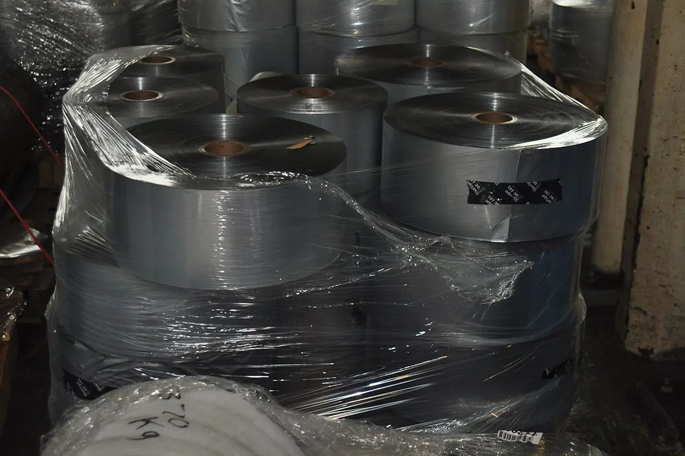
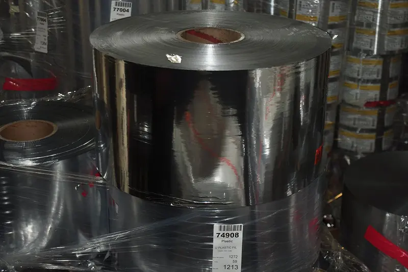

In continuous operation since 1985
CT Metal is a USA-based recycling company specializing in the recovery of foils, films, laminates, non-woven and paper roll stock.
We're leading the way in aluminum packaging recycling
CT Metal Industries began as an aluminum can recycler.
Led by Founder and President, Tom Mele, the company refocused at an early stage on aluminum foil and laminate packaging and has grown along with the demand ever since.
Today the company is the only recycler in the United States dedicated specifically to the aluminum packaging industry. Packaging manufacturers, laminators and printers count on CT Metal Industries as an outlet for materials that are hard to recover elsewhere. Fellow recyclers, importers and wholesalers also turn to the company as a specialist and dependable backup when quality falls short.
Our long-standing relationships with smelters and aluminum consumers around the world underscore the quality of what we ship.
Today, we continue to be mission-led. Recycled aluminum carries a fraction of the carbon footprint of primary metal, and we have the capacity and the model to keep growing with our customers.
Constant buyers of aluminum for recycling.
If your company generates laminated foil or bare foil scrap from production, get in touch with us.
We have the capacity to recover multi-million pounds a month of aluminum from packaging scrap and we're always looking for new suppliers.
We're looking for poly laminates, paperback foil, edge trim, damaged rolls, skeleton scrap and any aluminum-based materials that contain at least 35% aluminum.
We provide secure, environmentally sound materials recovery and destruction for the printing, packaging and laminating industries.

Part of a materials recovery innovation network
CT Metal Industries and We Buy Rolls are part of the Clean Lifecycle Network (CLN), a group of leading circular economy solutions companies recovering hard-to-recycle post-industrial and hazardous materials, and recapturing them as high-value resources.
Visit clnenv.com (opens in a new window)Get in touch.
We're experienced innovators and materials recovery experts who can find a market for your scrap. Make an impact on your supply chain and your bottom line.